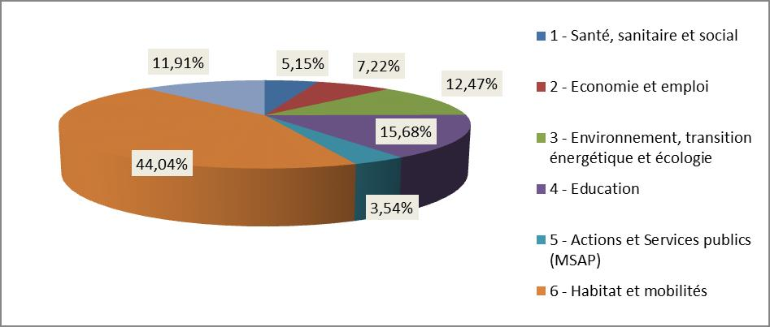

L'État dans les territoires
Répartition des dotations d'investissement de l'État en 2018
1,776 milliard au titre de la Dotation de soutien à l’investissement local, de la Dotation d’équipement des territoires ruraux et de la Dotation politique de la ville
Cette somme a permis de financer directement 27 328 projets portés par les communes et les intercommunalités dans tous les départements de notre pays.
Elle représente 24,07% du montant total des projets.
Le soutien de l’Etat en faveur de l’investissement des communes et des intercommunalités se répartit de la façon suivante pour la DSIL et la DTER.

Sources : Direction générale des collectivités locales (DGCL) • Réalisation : CGET service cartographie


Montant de la dotation globale de fonctionnement en 2019 :
Montant de la DGF par habitant en 2019 :
Variation de la DGF entre 2018 et 2019 :
Part de la DGF 2019 dans les recettes réelles de fonctionnement 2017 :
Variation de la DGF entre 2018 et 2019 par rapport aux recettes réelles de fonctionnement 2017 (en %) :
Part de la péréquation dans la DGF 2019 (en %) :
 Retour
Retour